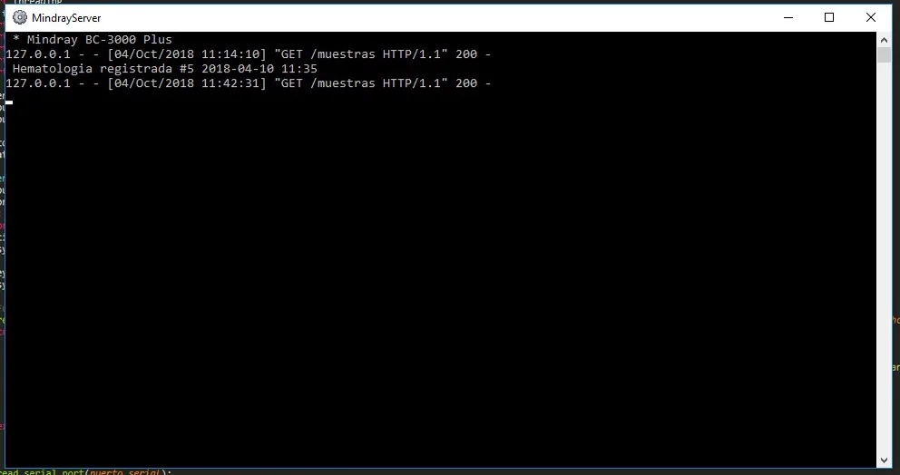
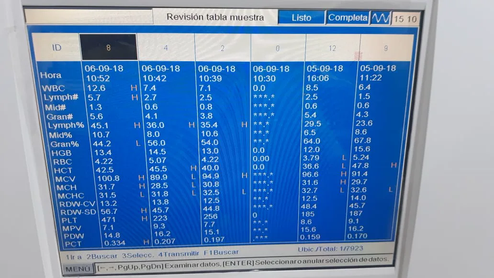
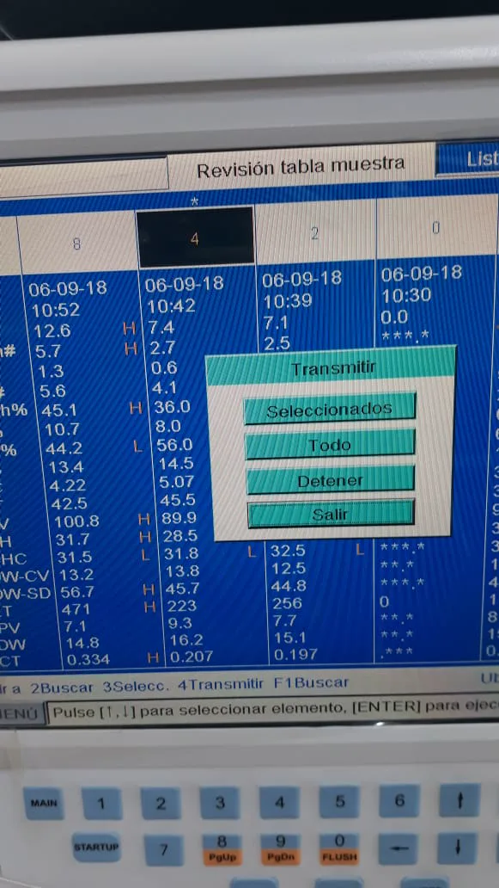
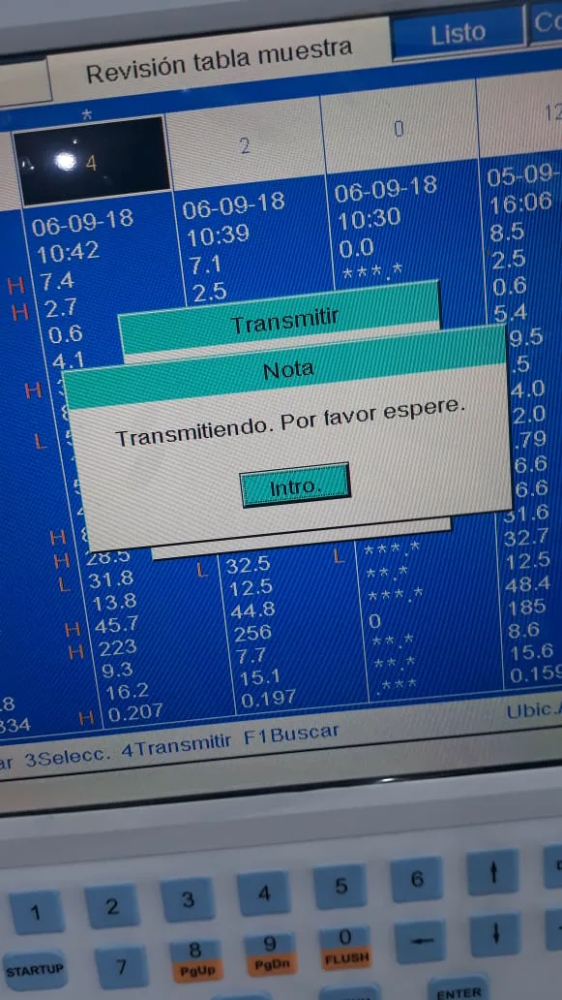
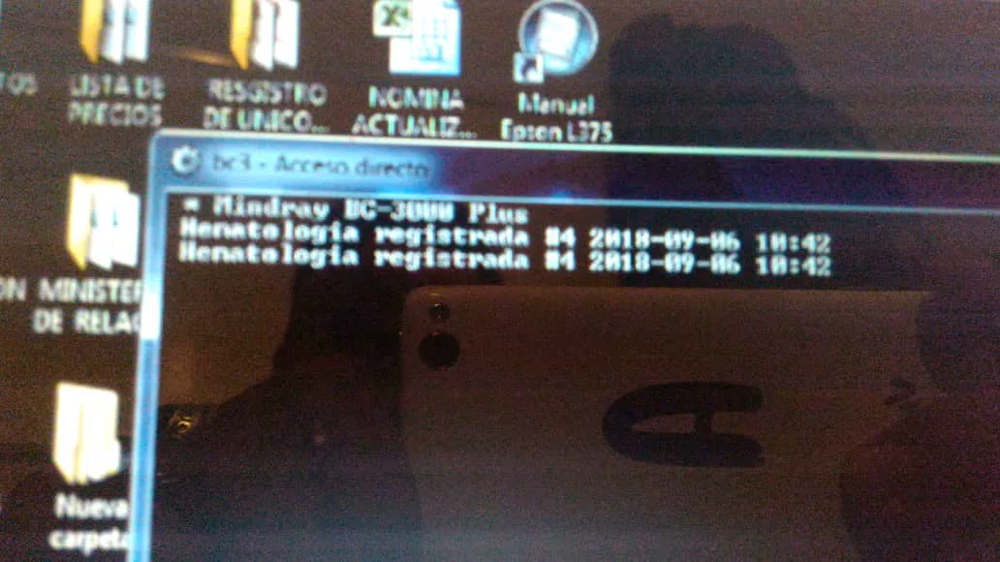
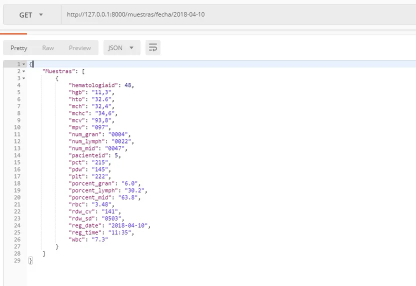

Mindray Server API
Aplicación de consola, que recibe datos enviados desde un equipo analizador para hematologías (mindray bc-3000 plus) mediante puerto serial y sirve una API para exportar los datos a otros sistemas.
Algunas capturas de pantalla del sistema






Script Cliente en PHP